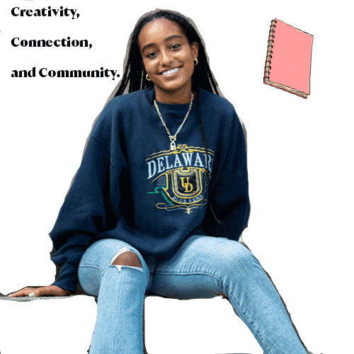

>

Isabel Bekele biography
personal information
My name is Isabel Bekele, and I’m a sophomore at Syracuse University. I’m a Magazine, News, and Digital Journalism major and an IM&T minor, and I’m interested in covering the intersection of media, tech, and culture. An accomplishment of mine is attending Syracuse through a leadership scholarship in Newhouse. Some of my hobbies including reading fiction books and writing for editorial publications. Specifically, I run a book blog on Instagram where I review new books, and I’m a features writer for Jerk Magazine. I’m from Scranton, Pennsylvania, but my family is originally from Ethiopia, so I speak also Amharic.
©2021